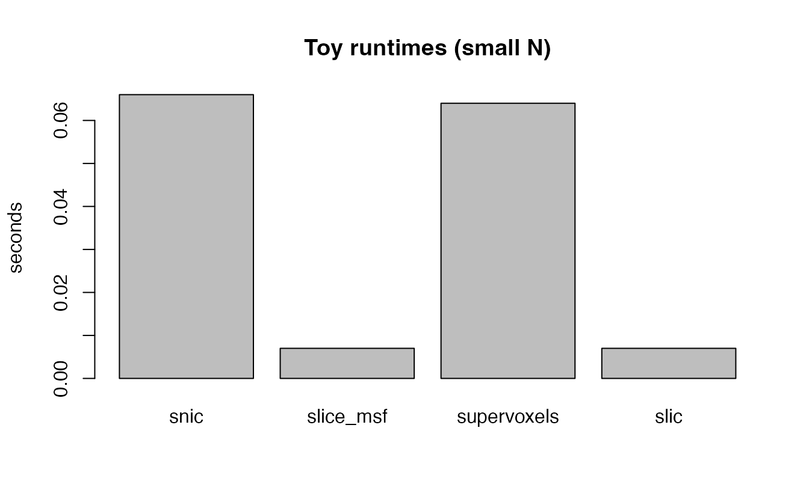

Speed up and parallelize
11-speed-parallel.RmdThreads
RcppParallel::setThreadOptions(numThreads = 2)Method choices
- Large N:
slice_msf(slice-wise MSF) orflash3d(hash/DCT); both avoid global iteration over all voxels. - Preserve K:
cluster4d_slic()withpreserve_k = TRUE. - Iterative refinement:
supervoxels()performs multiple reassignment iterations; uses RcppParallel for updates.
Grain size
- For
supervoxels, a practical start isgrain_size = max(100, nvox / (threads * 10)). Smaller values improve balancing at some overhead.
Memory tips
-
snic()is single-pass with low memory overhead (temporarily omitted below because the current C++ backend can segfault on some synthetic volumes; seetests/testthat/test_g3s.R). - Reduce time points or compress features if memory-bound.
Toy runtime illustration (small N)
Illustrative timing on toy data (very small N); absolute times are
not representative of larger datasets. We omit SNIC in the live run
because of the known segfault; once the upstream fix lands you can add
it back by extending the methods vector below.
make_toy_blocks <- function(dims = c(10,10,4), T = 12, seed = 123, amp = 1.0, sdn = 0.2) {
set.seed(seed)
d1 <- dims[1]; d2 <- dims[2]; d3 <- dims[3]
mask <- NeuroVol(array(1L, dims), NeuroSpace(dims))
arr <- array(rnorm(d1*d2*d3*T, sd = sdn), c(d1,d2,d3,T))
tt <- seq(0, 2*pi, length.out = T)
p1 <- sin(tt); p2 <- cos(tt)
zmid <- floor(d3/2)
arr[1:5, 1:5, zmid, ] <- sweep(arr[1:5, 1:5, zmid, ], 3, amp * p1, "+")
arr[6:10, 6:10, zmid, ] <- sweep(arr[6:10, 6:10, zmid, ], 3, amp * p2, "+")
vec <- NeuroVec(arr, NeuroSpace(c(d1,d2,d3,T)))
list(vec = vec, mask = mask)
}
toy <- make_toy_blocks()
run_and_time <- function(method, ...) {
t <- system.time(cluster4d(toy$vec, toy$mask, n_clusters = 6, method = method, ...))
unname(t["elapsed"]) # seconds
}
methods <- list(
supervoxels = list(max_iterations = 3),
slic = list(max_iterations = 5),
slice_msf = list()
)
elapsed <- vapply(names(methods), function(m) {
args <- methods[[m]]
do.call(run_and_time, c(list(method = m), args))
}, numeric(1))
barplot(elapsed, ylab = "seconds", main = "Toy runtimes (tiny N)")

includes: in_header: |-
Illustrative runtimes on toy data (small N).